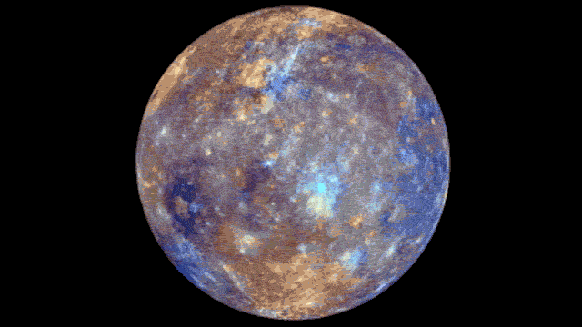
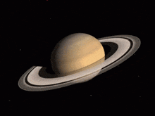
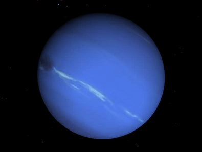

A estrela central do Sistema Solar que fornece luz, calor e energia.

O menor planeta, mais próximo do Sol, com temperaturas extremamente variáveis.

Um planeta extremamente quente, com atmosfera densa e efeito estufa intenso.

Nosso planeta, com água líquida, atmosfera estável e condições ideais para vida.

Conhecido como planeta vermelho, com evidências de água líquida no passado.

O maior planeta, gigante gasoso com tempestades intensas e muitas luas.

Gigante gasoso famoso por seus anéis compostos por gelo, rochas e poeira.

Um gigante gelado inclinado, com rotação lateral e coloração azul-esverdeada.

O planeta mais distante, com coloração azul intensa e ventos extremamente fortes.